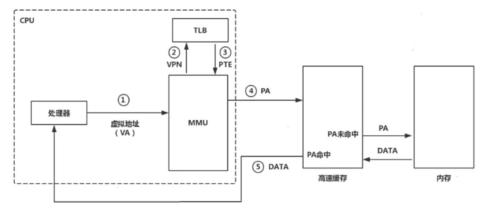
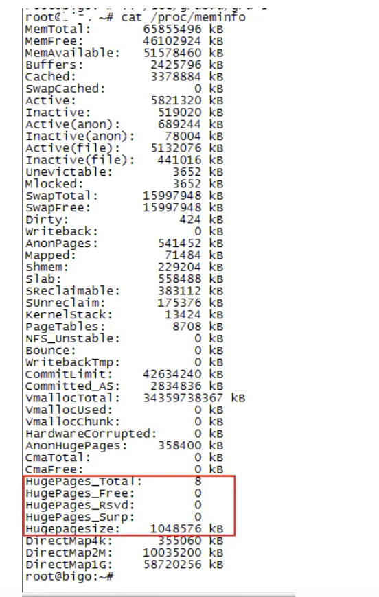

其他内存相关知识——Linux内存管理小结三
【Overcommit和OOM】
在Unix中，当一个用户进程使用malloc()函数申请内存时，假如返回值是NULL，说明当前系统没有足够的可用内存。一般程序都会判断malloc返回值是null时便报错退出。
因为进程申请内存后，可能并不会马上使用内存。所以有时候，为了系统能够运行更多的程序，它可以对于超出自身剩余内存的malloc请求也返回成功。这种行为叫做Overcommit。
Linux下overcommit有三种策略：
\0. 启发式策略。合理的overcommit会被接受，不合理的overcommit会被拒绝。
\1. 任何overcommit都会被接受。
\2. 当系统分配的内存超过swap+N%*物理RAM(N%由vm.overcommit_ratio决定)时，会拒绝commit。
Overcommit采用哪种策略可以通过/proc/sys/vm/overcommit_memory设置（可将该参数设置为0/1/2，对应上面3中策略）。 Overcommit的百分比由vm.overcommit_ratio设置。如：
# echo 2 > /proc/sys/vm/overcommit_memory
# echo 60 > /proc/sys/vm/overcommit_ratio
【大页内存与快表TLB】
进程访问内存时，传递给CPU的是进程的虚拟内存地址，CPU需要将虚拟内存转换为物理内存地址，再去物理内存获取数据。从虚拟内存到物理内存的映射就依赖页表。
页表是保存在物理内存中的一个页表条目集合。如果要访问的虚拟内存页之前已经映射到了物理内存，则该映射关系会被记录到页表中。后续再访问该虚拟内存地址时，CPU会通过页表中查找到的映射关系得到对应的物理地址；如果映射关系不存在，那么就会发生缺页中断，中断处理程序会完成虚拟内存到物理内存你的映射，并记录到页表中以供后续查询。
但是内存的处理速度相比CPU来说还是慢很多。如果CPU每次访问内存都要查询页表去获取映射关系，那么必然会对性能产生较大的影响。TLB就是为了解决这个问题出现的。
TLB(Translation Lookaside Buffer),旁路缓冲器,又称快表。TLB的作用是作为内存页表的缓冲。它是CPU中的一个内存管理单元，访问速度会和CPU处于一个量级，远高于内存。CPU需要获取内存映射时，就会先去访问TLB，如果TLB中已经缓存了所需的地址映射，那么就称为TLB命中，这样CPU就可以很快的得到虚拟地址对应的物理地址，减少了对实际内存页表的访问，提高了效率。（实际上TLB后面还有多级的高速缓存，最后才是到实际内存）

而由于成本等因素限制，TLB不可能做的很大，一般只能缓存512个页表项，也就是记录512个虚拟内存页到物理内存页的映射关系。一般情况下，操作系统的默认内存页大小为4K。这样的话，TLB中能缓存的最多也就只有2M的内存映射关系。如果访问这2M的内存，TLB可以命中，那么CPU可以很快的获取映射关系；如果访问这2M以外的内存，那么TLB的作用就失去了。为了充分发挥TLB的作用，就引入了大页内存。
大页内存（HugePages）的思想就是通过增大内存页的大小，来增加TLB中缓存的内存大小，从而增加TLB命中的概率，提高性能。比如将内存页的大小从4K增大到2M，那么TLB中512个页表项就能缓存1G内存地址空间的映射，这样相比原来的2M，TLB命中的概率大大增加。
大页内存可以在/proc/meminfo中查看。
